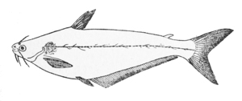

ϭⲗⲃⲟⲟⲩ, ϭⲉⲗⲃⲁⲩ S, ϫⲉⲗϥⲁⲩ B nn, fish, silurus mystus: Glos 412 S among fish [....]τις · ϭ., K 171 B ⲛⲓϫ. شلبا; v JEA 14 29; ⲥⲓϣⲉ ⲛϭⲉⲗ.: PBad 5 406 in recipe.

ϫⲉⲗϥⲁⲩ B v ϭⲗⲃⲟⲟⲩ.
ϭⲗⲃⲟⲟⲩ, ϭⲉⲗⲃⲁⲩ S, ϫⲉⲗϥⲁⲩ B nn, fish, silurus mystus: Glos 412 S among fish [....]τις · ϭ., K 171 B ⲛⲓϫ. شلبا; v JEA 14 29; ⲥⲓϣⲉ ⲛϭⲉⲗ.: PBad 5 406 in recipe.